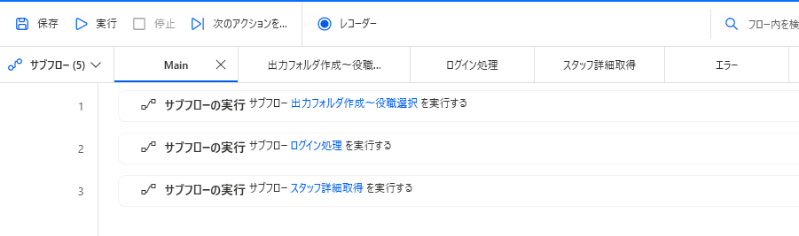
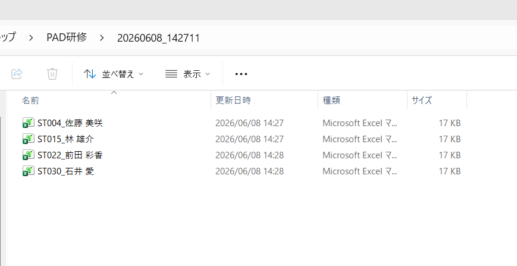

LESSON 7 / 総合演習
第7回 総合演習 〜プロフィール一括出力フローを Main＋4サブフロー構造で完成させる〜
第1〜6回で学んだすべてを統合し、実装済み最終演習フローと同じ 「Main＋出力フォルダ作成〜役職選択／ログイン処理／スタッフ詳細取得／エラー の5本構成」 で現場で使えるレベルの自動化を完成させます。Main は4つのサブフローを順番に呼び出すだけのシンプルな形になり、処理の中身は役割ごとのサブフローに分かれています。
事前準備
- 第1〜6回のフローがすべて手元にある
- テンプレ
スタッフ情報_テンプレート.xlsmが手元にある - 自分のメール／パスワード（直接暗号化されたテキスト形式で保持済み）
A. Main フロー（4サブフローを呼ぶだけ）
今回の最終フローは、処理の中身をすべて役割ごとのサブフローに分けています。Main はそのサブフローを上から順番に呼び出すだけ。これにより「どこで何をしているか」が一目で分かり、修正もそのサブフローだけ直せば済みます。
1
サブフローの実行 サブフロー 出力フォルダ作成〜役職選択 を実行する
2
サブフローの実行 サブフロー ログイン処理 を実行する
3
サブフローの実行 サブフロー スタッフ詳細取得 を実行する

💡 サブフローは画面上部のタブで切り替えます。今回は Main／出力フォルダ作成〜役職選択／ログイン処理／スタッフ詳細取得／エラー の計5本（タブ表示は「サブフロー (5)」）。エラー サブフローは Main からは直接呼ばず、スタッフ詳細取得の「ブロック エラー発生時」から呼び出されます。
🛠️ ハンズオン課題①：まず空のサブフローを 出力フォルダ作成〜役職選択／ログイン処理／スタッフ詳細取得／エラー の4つ作成し、Main に「サブフローの実行」を3つ並べましょう（エラーは後でブロックから呼びます）。
B. 出力フォルダ作成〜役職選択 サブフロー
最初に呼ばれるサブフロー。出力先フォルダの用意（日時取得・整形・ユーザー名取得・フォルダ作成）と、絞り込み条件の選択（部署×役職マスターから選択ダイアログ）までをまとめて行います。第2回・第3回でやった内容の流用です。
1
現在の日時を取得
現在の日時を取得して、現在の日時 に保存します
現在の日時を取得して、現在の日時 に保存します
2
日時の値をテキスト値に変換
形式
形式
'yyyyMMdd_HHmmss' を使って datetime 現在の日時 を変換し、現在の日時_テキスト値 に保存する3
Windows 環境変数を取得
環境変数
環境変数
'USERNAME' の値を取得し、USERNAME に保存する4
フォルダーの作成
フォルダー 現在の日時_テキスト値 を
フォルダー 現在の日時_テキスト値 を
'C:\Users\'USERNAME'\Desktop\PAD研修' に作成する5
新しいデータテーブルを作成する
部署×役職マスターを直書きして データテーブル_検索条件 に格納する
部署×役職マスターを直書きして データテーブル_検索条件 に格納する
6
データ テーブル列をリストに取得
データ テーブル データテーブル_検索条件 から列
データ テーブル データテーブル_検索条件 から列
'部署' の内容を取得し、新しいリストとして 部署リスト に保存7
リストから選択ダイアログを表示
メッセージ
メッセージ
'選択してください' を含む選択ダイアログを表示します。ユーザーの選択を 選択部署 に格納します8
データ テーブル列をリストに取得
データ テーブル データテーブル_検索条件 から列
データ テーブル データテーブル_検索条件 から列
'役職' の内容を取得し、新しいリストとして 役職リスト に保存9
リストから選択ダイアログを表示
メッセージ
メッセージ
'選択してください' を含む選択ダイアログを表示します。ユーザーの選択を 選択役職 に格納します
🛠️ ハンズオン課題②：第3回の「日時→整形→フォルダ作成」と第2回の「直書きDT→列リスト化→選択ダイアログ」を組み合わせて、このサブフローを組んでみましょう。
C. ログイン処理 サブフロー
Chrome（WebDriver）起動 → メール・PW 入力 → 規約チェック → ログインボタン押下。第4回のログインフローをそのまま流用します。
1
新しい Chrome を起動する
Chrome を起動して
Chrome を起動して
'https://feretti0322.github.io/PAD-Demo/' に移動し、インスタンスを ブラウザ に保存します2
Web ページ内のテキストフィールドに入力する
エミュレート入力を使わずにテキスト フィールド Input email 'email' に
エミュレート入力を使わずにテキスト フィールド Input email 'email' に
'shimura.fellows@gmail.com' を入力します3
Web ページ内のテキストフィールドに入力する
エミュレート入力を使わずにテキスト フィールド Input password 'password' 2 に
エミュレート入力を使わずにテキスト フィールド Input password 'password' 2 に
●●●●●（機密情報テキスト）を入力します4
Web ページのチェックボックスの状態を設定します
チェック ボックス Input checkbox 'agree' 2 の状態を オン に設定します
チェック ボックス Input checkbox 'agree' 2 の状態を オン に設定します
5
Web ページのボタンを押します
Web ページのボタン Button 'ログイン' を押します
Web ページのボタン Button 'ログイン' を押します
🛠️ ハンズオン課題③：第4回のログインフローを「ログイン処理」サブフローとしてそのまま流用しましょう。PW は必ず機密情報テキストで保持すること。
D. スタッフ詳細取得 サブフロー
URL 直接ナビゲートで絞り込み一覧へ → ラベル＋移動先で全ページ走破して ID を蓄積 → ブロックエラー発生時の中で For each → 詳細取得 → Excel 出力。最終演習の中心となるサブフローです。
📚 復習はこちら：第5回 A データ抽出の基本第5回 B-2 ラベル＋移動先でページ走破第5回 C-3 URLパラメータの動的組立第6回 A-2 For each×データテーブル第6回 B-2 IF の使いどころ第6回 D-2 全体中断 vs 個別スキップ第3回 A Excel 基本3アクション第3回 B マクロの実行
1
Web ページに移動
'https://feretti0322.github.io/PAD-Demo/staff-list.html?dept=' 選択部署 '&role=' 選択役職 に移動2
新しいデータ テーブルを作成する
新しいデータ テーブルを作成して データテーブル_スタッフID に格納する
新しいデータ テーブルを作成して データテーブル_スタッフID に格納する
3
データ テーブルから空の行を削除する
データ テーブル データテーブル_スタッフID から空の行をすべて削除する
データ テーブル データテーブル_スタッフID から空の行をすべて削除する
4
ラベル 移動先 ラベル
5
Web ページからデータを抽出する
複数の Web ページから、ページングを使用してリストを抽出し、仮想テーブルを作成して スクレイピング_ID にストアします
複数の Web ページから、ページングを使用してリストを抽出し、仮想テーブルを作成して スクレイピング_ID にストアします
6
データ テーブルをマージする
スクレイピング_ID を データテーブル_スタッフID にマージする
スクレイピング_ID を データテーブル_スタッフID にマージする
7
Web ページ上の要素の詳細を取得します
Web ページから要素 Button の属性
Web ページから要素 Button の属性
'Disabled' を取得し、ページャー要素 に保存します8
If ページャー要素
<>'true' then9
Web ページのボタンを押します
Web ページのボタン Button（次へ）を押します
Web ページのボタン Button（次へ）を押します
10
移動先 に移動する
11
End 終了
12
ブロック エラー発生時 Excel出力エラー（エラー発生時はサブフロー「エラー」を呼び出し、次の繰り返しに移動）
13
For each フォーイーチ_スタッフID in データテーブル_スタッフID
14
Web ページに移動
'https://feretti0322.github.io/PAD-Demo/staff-detail.html?id=' フォーイーチ_スタッフID に移動15
Web ページからデータを抽出する
Web ページからリストを抽出し、それを スクレイピング_スタッフ詳細 にストアします
Web ページからリストを抽出し、それを スクレイピング_スタッフ詳細 にストアします
16
Excel の起動
Excel を起動し、既存の Excel プロセスを使用してドキュメント
Excel を起動し、既存の Excel プロセスを使用してドキュメント
'C:\Users\'USERNAME'\Desktop\PAD研修\スタッフ情報_テンプレート.xlsm' を開き、Excel インスタンス Excel に保存します17
Excel ワークシートに書き込む
Excel インスタンス Excel の列 2 および行 2 のセルに値 スクレイピング_スタッフ詳細 を書き込み
Excel インスタンス Excel の列 2 および行 2 のセルに値 スクレイピング_スタッフ詳細 を書き込み
18
Excel ワークシートに書き込む
Excel インスタンス Excel の列 2 および行 10 のセルに値 現在の日時 を書き込み
Excel インスタンス Excel の列 2 および行 10 のセルに値 現在の日時 を書き込み
19
Excel マクロの実行
インスタンスが Excel に保存されている Excel ドキュメントでマクロ
インスタンスが Excel に保存されている Excel ドキュメントでマクロ
'空白削除' を実行20
Excel を閉じる
出力フォルダ
出力フォルダ
'\'スクレイピング_スタッフ詳細[0]'_'スクレイピング_スタッフ詳細[1] という名前で Excel ドキュメントを保存して Excel インスタンス Excel を閉じる21
End For each 終了
22
End ブロック終了
23
Web ブラウザーを閉じる
Web ブラウザー ブラウザ を閉じる
Web ブラウザー ブラウザ を閉じる
💡 保存名の スクレイピング_スタッフ詳細
[0] が氏名、[1] が ID にあたります（抽出結果の並び順に合わせてください）。テンプレを直接開いて、閉じるときに 出力フォルダ\氏名_ID の名前で別名保存します。
🛠️ ハンズオン課題④：第5回・第6回の流用 ＋ 第3回の Excel 操作を統合して、スタッフ詳細取得 サブフローを組んでみましょう。最後の Web ブラウザーを閉じる を忘れずに。
E. エラー サブフロー
スタッフ詳細取得の「ブロック エラー発生時」から呼ばれます。発生時刻・スタッフ ID・エラー内容をテキストファイルに追記します。
1
現在の日時を取得
現在の日時を取得して、エラー時刻 に保存します
現在の日時を取得して、エラー時刻 に保存します
2
最後のエラーを取得
最後に発生したエラーを取得して LastError に保存し、エラー値を消去します
最後に発生したエラーを取得して LastError に保存し、エラー値を消去します
3
テキストをファイルに書き込む
'C:\Users\'USERNAME'\Desktop\PAD研修\エラーログ.txt' に エラー時刻'_'フォーイーチ_スタッフID'_'LastError を書き込みます
📌 「テキストをファイルに書き込む」の設定：内容を追加する（上書きしない＝追記モード）／エンコードは UTF-8／新しい行を追加するをオン。これで実行のたびにエラーが1行ずつ追記されていきます。
🛠️ ハンズオン課題⑤：第6回のエラー処理パターンを「エラー」サブフローに切り出して、スタッフ詳細取得の「ブロック エラー発生時」から呼び出される構造を完成させてください。
F. 通し動作確認

Desktop\PAD研修 内：日時フォルダの中に「氏名_ID.xlsm」が並んでいる状態
🛠️ ハンズオン課題⑥：通しで実行し、
Desktop\PAD研修 内に日時フォルダ＋複数 Excel が並ぶことを確認。
解答例 / 完成フローテキスト
各サブフローの完成フローテキストを個別にダウンロードして、PAD 編集画面に貼り付けてください。
⚠️ 解答はあくまで「答え合わせ用」。まず自力で組んでから差分を確認するのが学習効果を最大化するコツです。
よくある詰まりと FAQ
Q1. ChromeDriver と Chrome のバージョン不一致で起動しない
Chrome は自動更新されるため、ChromeDriver とメジャーバージョンが乖離すると起動エラーになります。
chrome://settings/help で Chrome のバージョンを確認し、第1回の手順で ChromeDriver を更新してください。Q2. URL に
%選択部署% を入れたのに絞り込まれない変数が空（
出力フォルダ作成〜役職選択 サブフローを先に実行していない）か、％が全角になっているのが原因。変数は必ず半角の % で囲みます。Main の呼び出し順（出力フォルダ作成〜役職選択 → ログイン処理 → スタッフ詳細取得）も確認してください。Q3. ページ送りが無限ループする／1ページしか取れない
Disabled 属性を判定する If の比較値 true が全角になっているか大文字が混じっているケースがほとんど。半角・すべて小文字の true で入力してください（True や ＴＲＵＥ は不一致になります）。コツは、取得した要素から返ってきた値（true／false）をそのままの表記で入力すること。全角や大文字だと文字列が一致せず、終端判定が効きません。Q4. ブロックエラー発生時でサブフローを呼んだ後にループが止まる
エラー発生時の動作を「次の繰り返しに移動」に設定し忘れているのが原因。
Q5. エラーログ.txt が毎回上書きされる／文字化けする
「テキストをファイルに書き込む」の設定で、内容を追加する（追記モード）／エンコード UTF-8／新しい行を追加するをオンにしてください。上書きモードのままだと毎回1件だけ、エンコード違いだと文字化けします。